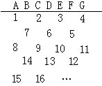
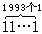

习题五
1.验证对于任意整数a、b，式子a≡b（mod1）成立，并说出它的含义。
2.已知自然数a、b、c，其中c≥3，a除以c余1，b除以c余2，则ab除以c余多少？
3.1993年的六月一日是星期二，这一年的十月一日是星期几？
4.求33335555＋55553333被7除的余数。
5.所有自然数如下图排列.问300位于哪个字母下面？

6.数，被13除余多少？（提示：先试除，可知13|111111，而1993≡1（mod 6））。
7.用弃九法检验下面运算是否正确：
①845×372=315340；
②12345×67891=838114385；
③1144192613÷28997＝39459。
8.求1993100的个位数字.